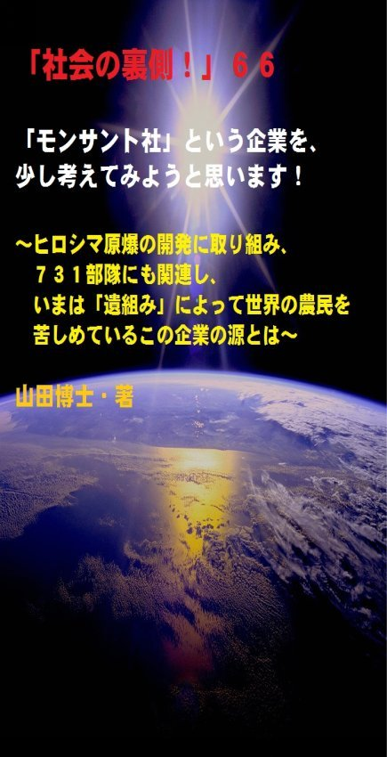

| 「社会の裏側！」６６......「モンサント社」という企業を、少し考えてみようと思います！: ヒロシマ原爆の開発に取り組み、７３１部隊にも関連し、いまは「遺組み」によって世界の農民を苦しめているこの企業の源とは | |
| 山田博士 | |
| (2017) | |

「社会の裏側！」６６......「モンサント社」という企業を、少し考えてみようと思います！～ヒロシマ原爆の開発に取り組み、７３１部隊にも関連し、いまは「遺組み」によって世界の農民を苦しめているこの企業の源とは～
The social backside66
山田博士・著
★本書の著作権について
皆さんにはまったく関係ないことだと思いますが、複写、転送、抜粋、転載など、著作権侵害にあたる行為は絶対になさらないで下さい。本書の著作権は、山田博士にあります。今後、皆さんのお役に立ちたい活動が出来なくなりますので、その点、ぜひよろしくお願いします。ささささ、それでは、本書をどうぞ、ごゆっくりご覧下さい。
★概要
どんな企業も、どんな国も、その過去の歴史を見れば、だいたいその正体が分かるモンです。
これは個人でも同じ。
この「モンサント社」という企業は、いったい、どういう過去を持っているのか。
第二次世界大戦中、日本の広島に投下する原爆の開発をしていたのが、アメリカの「マンハッタン計画」でした。
ところが、この「モンサント社」の社長であったトーマスという人が、大きな顔をして、これに参加しているんですね。
つまり、あの広島の原爆製造に、この「モンサント社」が深く関わっていたというわけなんです。なんとかして、日本人を破滅させたいという気持ちが、そのころからあったようです。
それがいま、欧米諸国とは異なり、とくに日本の大地の隅々にまで「遺組み」（遺伝子組み換え）作物を広めた理由です。
なんとも、すさまじい。
そして、あの大問題になったＰＣＢ（ポリ塩化ビフェニル）。
このＰＣＢには、置換（ちかん）塩素の位置によって合計２０９種もの異性体（いせいたい）が存在するのですが、その一つに、「ダイオキシン類」になるものがありました。
「とんでもない働きをする」化学物質が、このＰＣＢです。
ＰＣＢは、「環ホル」（上述）の一つでもあり、電気のトランスなどに広く使われ、世界中にこのＰＣＢがバラまかれました。
このＰＣＢを製造していたのが、じつはこの「モンサント社」でした。いやあ、よくやってくれますよね（皮肉です）。
そして、再び先の「大戦中」の話に戻ります。
当時、日本軍は、中国の黒竜江省のハルビンに、「生物化学兵器（ＢＣ兵器）研究所」なるものを作っています。
ここで、石井四郎や内藤良一たちを中心とした、「陸軍７３１部隊」が、中国人３０００名に対して、コレラ菌などを強制的に注射したりして、残酷な人体実験を行ったわけですね。
このような非人道的な行為は、完全に、日本の歴史上恥ずべき汚点です。
いかに、欧米列強に抗した戦争だといえども、こんな人体実験は、とても許されるはずもありません。
ただ当時、日本軍に「バイオテクノロジー」の知識があるばずもなく、その人体実験の担当は、日本国内から派遣された化学者がしていました。
その化学者の大部分が、じつは日本の代表的薬品メーカー「武田薬品工業」の研究者だったんです。
つまり、その７３１部隊というのは、武田の「満州支社」......のような存在だったわけなんですね。
戦後、そうして得た貴重な人体実験の資料は、アメリカ軍を通じて、「武田薬品工業」の事業提供企業である「モンサント社」へ渡されたと言います。
その資料が、回り回って、今度は、のちに、ベトナム戦争で使われた枯葉剤（かれはざい）に応用されているわけですね。
まあ、そのような過去を持っている企業が、いま「環ホル」や「遺組み」（遺伝子組み換え）分野に躍起になる。
なるほどねえ......という気がしませんか(笑）。
本書では、分かりやすくサッと読める文体で、こうした問題をまとめてあります。
ぜひ、ご活用下さればと、思います。
★目次
★（第１章）
「モンサント社」の内実を知るだけで、皆さんの「世界を見る目」が１８０度大きく変化します。そして、今後、皆さんが生きて行くうえで、今回の内容は大きな財産になるはず......
★（第２章）
「モンサント社」の過去の歴史とは、いったい、どういうものだっのでしょうか。第二次世界大戦中、日本の広島に投下する原爆の開発をしていたのが、アメリカの「マンハッタン計画」でした。ところが、この「モンサント社」の社長であったトーマスという人が、これに参加しているんですね。つまり......
★（第３章）
「モンサント社」の株主を知っていますか。個人大株主の一人であるビル・ゲイツ氏などが何かと矢面（やおもて）に立っていますが、実際、この企業の株主は誰なのでしょうか。「法人株主トップ５社」とは......
★（第４章）
「モンサント社」の問題は、もっと深く考えるべきなんです。つまり、西洋諸国の非白人地域の植民地分割の歴史。これを思うと、本当に涙が止まりません。人が人を支配する。当然のように、収奪する。このような、「人として許されない歴史」が、いままでずっと続いてきたわけですね。白人たちは、さも当然のように......
★「社会の裏側！」シリーズの既刊本案内
★プロフィール
（最初に、恥ずかしながら、ぼくの紹介を簡単に述べておきます）
やまだ・ひろし。
１９４７年、福井県小浜（おばま）市生まれ。
食生態学者。元大学名誉教授。日本危機管理学会会員。
山田博士いのち研究所主宰。
ベトナム戦争の終わったちょうどその年１９７５年に、マンガストーリィと商品の実名で食べものや環境を取り上げた小冊子「暮しの赤信号」を発行する。実名で取り上げたため、社会に衝撃を与えた。各号１０万部単位で読まれ、隠れたベストセラーなどと、新聞などで何度も報道される。
同じ年、偶然にも有吉佐和子さんの「複合汚染」が発表され、この小冊子はその動きも受けて多くの学校の副読本でも活用された。
文化放送の「なっちゃこワイド」や、ＮＨＫ海外放送「ある日本人」でお話しをしたり、ギター弾き語り公演や、各自治体や学校などへの講演なども続けている。
現在は、メルマガ「暮しの赤信号」（「短縮版」と「完全版」の２種）を発行し、企業名や商品名などを公表して、世界中のかたに喜ばれている。
その読者層は、医師や看護師、栄養士、教師、会社経営者、自治体など、国の内外を問わず、多くの読者たちから毎日のように便りが届いている。年齢層も、１０代から８０代まで、さまざまだ。
また、ほぼ毎月第３土曜日に、東京の恵比寿でお茶飲み会「博々亭（ひろびろてい）」を開催。遠路から毎回読者が駆けて来ている。参加条件はメルマガ読者に限定だが、参加費用は無料だ。
このメルマガは、まぐまぐ！を始め３つのスタンドの合計で、数千部発行しているが、もしご関心のあるかたは、ご覧いただくと嬉しい。読者登録をされれば、毎回、無料でお手元に届く。月～水は本誌が、木～日は『３分で分かる！今週のワンショット「暮しの赤信号」』が、それぞれ早朝５時に届けられる。その時刻を楽しみにしている読者も多いとか。
短縮版メルマガ「暮しの赤信号」は無料。
下記で登録されれば、毎回、自動的に配信される。
「短縮版」（無料です）→ http://goo.gl/AFx95J
著書に 『脱コンビニ食！』（平凡社新書）
『危険な食品』（宝島社新書）
『その食品はホンモノですか？』（三才ブックス）
『ひとり月１万円食費で幸せ生活』（ＷＡＶＥ出版）
『最新 危ないコンビニ食』（現代書館）
『あぶないコンビニ食』（三一新書）
『続 あぶないコンビニ食』（同）
『外食店健康度ランキング』（同）
『山田博士の暮しの赤信号』第１巻～第５巻（亜紀書房）
『暮しの赤信号』小冊子＆ＣＤ－ＲＯＭ版全２３巻
『月１万少々の食費で、ザクザクと健康を稼ぐぼくの方法』
『いのち運転"即実践"マニュアル』各話
『山田流・時事呆談』各話
『セーラー服と警察犬』（小説）各巻......
などがある。
山田のホームページ http://yamadainochi.com/
★はじめに......
こんにちは。
山田博士です。
本書をご覧いただき、嬉しく思っております。
この内容をご覧いただくことで、少しでもあなたが「社会の裏側！」の流れにお気づきになり、そしてたとえ１ミリでもいい、即、行動されることを願っております。
ただ読むだけでは、あなたの身の回りの状況は石のように動きません。
本書をご覧になって、これは......と思うことがあれば、即行動なさって下さい。
お願いします。
その小さな行動の積み重ねこそが、あなたの明日を、１２色のバラ色で輝かせることになると信じております。
ぼくは、いのちが大好き。
たとえそれがどんな小さな昆虫であっても、また、動物、小鳥などに至るまで、どんないのちでも、彼らの顔を眺めているだけで、本当にいとおしくなります。
もちろん、人間もそう。
だから、とくに子どもなど、もうそばで仕草を見ているだけで、ぼくの頬は緩（ゆる）みっぱなし。
ぼくの姿を想像して下さい。本当の「お馬鹿みたい」です......(笑)。
だけど、そういう性格だということもあり、これらのいのちが少しでも「ないがしろにされている現状」を、黙って見過ごすことができないんですね。
昔からそうでした。
そういう思いが、まだまだ未熟だった弱冠２８歳のときに、小冊子「暮しの赤信号」を発行させたのかもしれません。
これは、全国の学校の副読本などでも活用されロングセラーとなりました。
今回、こうして皆さんにお読みいただくのは、毎日発行しているぼくのメルマガ「暮しの赤信号」で掲載した内容を元にしております。
このメルマガは「短縮版」と「完全版」の２種類があり、今回こうして電子書籍にしたものは、１００％掲載した「完全版」のもの。
そのため、「短縮版」をご覧のかたは、ぜひ手に取っていただければと思っております。
また「完全版」をご覧になっているかたも、まだご覧になっていない内容も多々あると思います。
それに、今回、こうして電子書籍にするにあたり、文章のすべてにわたって「小見出し」を付けてみました。
これらを目次でまとめて見るだけで、すぐにこの内容が氷解するようになっています。
ぜひ、いつもお手元に置いて下さい。
なお、この「社会の裏側！」は、今後シリーズとして発刊して行くつもりです。
もしご関心があれば、「社会の裏側！」という名前で、検索してお調べ下さい。
さまざまな問題の社会の裏側！を詳しく、しかも楽しく述べております。
ぼくの名前で検索されても、見つかるのではないかと思います。
ささささ、能書きはそこまでにします。
どうぞ、頁をお繰（く）り下さい。
お楽しみに！
山田博士
★（第１章）
「モンサント社」の内実を知るだけで、皆さんの「世界を見る目」が１８０度大きく変化します。そして、今後、皆さんが生きて行くうえで、今回の内容は大きな財産になるはず......
ぼくは、ふだんは、「特定の企業や個人」について、どうのこうの言うのは、好きではありません。
と言うより、ぼくの性格がそれを許さないのです。
たとえ、その企業がどれだけ問題を抱えていたとしても、必ず、どこかに良い部分もあり、やがて自分たちで、しっかりした自浄作用を起こすだろうと、思ってしまうからです（まあ、そこがぼくの弱いところではあるのですが......）。
もちろん、それらを社会に知らせるために、情報としては公開したりしますが、誹謗中傷（ひぼうちゅうしょう）などは、絶対にしません。
ぼくは、昔から、「敵と仲間になる」のが、非常に得意なんです(笑)。
そして、敵も味方もいっしょになって、問題を解決する方向へ動くことを、いままでもしてきました。
ただ、この「モンサント社」だけは別......(笑)。
ところで、あなたは、この「モンサント社」なる一企業の実態を、少しはご存じでしょうか。
人類が生きて行くうえで一番大切な食料問題。
いまの社会で、この問題に、この「モンサント社」は、大きく関わっています。
だから、毎日、目が離せません。
カーギル社やモンサント社（いわゆるロックフェラー傘下です）たちが、世界中の種子（しゅし）に特許権を設定したりしているわけですね。
自然界にある種子にすら、自分たちの利権を設定して、それをなんと有料で使わせるという、信じられない行為をしている企業なんですね。
この「モンサント社」の特許の種子が自然界に氾濫し、そこで交雑することによって、もはやどの種も、子孫を残さないＦ１型に変異して行きます。
そう、●●を残さない種（●●は、下記の設問をご覧下さい）。
そのような行為を、「平気な顔で」進めている。
まあ、そのような「遺組み」（遺伝子組み換え）や農薬関係の企業だろうな、ぐらいはおぼろげにお分かりでも、その実態は闇の中だと思います。
そこで、この「モンサント社」。
日本人にとって昔から大きな影響を与えているこの企業を、もし、あなたがあまりお分かりでなければ......それは人生の大きな損失。
いや、大げさではなく、本当にそうだと思っています。
この機会に......ぜひ知ってほしい。
この企業の内実を知るだけで、皆さんの「世界を見る目」が１８０度大きく変化します。
そして、今後、皆さんが生きて行くうえで、今回の内容は大きな財産になるはずだと思いますよ。
そう、ぼくは確信しています。
なにしろ、ぼくたちが日本の国内で考えている「企業」という範疇（はんちゅう）とは大きく異なっていますからね。
きっと初めてお知りになるかたは、何度もひっくり返ることになるでしょう。
どうか、あなたの後ろに座布団を何枚も敷いて、怪我（けが）のないようにしてご覧下さいな(笑)。
まあ、冗談はともかく、今回は、少し真面目に（いつもそのつもりですが......笑）、この「モンサント社」を考えてみます。
まず、この企業の過去の行為から見てみましょうか。
えっと......。
★（第２章）
「モンサント社」の過去の歴史とは、いったい、どういうものだったのでしょうか。第二次世界大戦中、日本の広島に投下する原爆の開発をしていたのが、アメリカの「マンハッタン計画」でした。ところが、この「モンサント社」の社長であったトーマスという人が、これに参加しているんですね。つまり......
どんな企業も、どんな国も、その過去の歴史を見れば、だいたいその正体が分かるモンです。
これは個人でも同じ。
たとえば、ぼく山田博士（やまだひろし）という個人の過去、つまり、いままで、どいう悪事を働いてきたか、どれだけ良い行動をしてきたか、などの事実を探ってみますと、「うん、こやつは、なかなかやるわい」となったり、逆に「こりゃダメだ、こりゃ」......となったり、当人の正体がつかめます(ぼくはどちらです？ 笑)。
まあ......ぼくの過去は、一応、横に置いておきましょう（すぐ逃げる）。
ところで、この「モンサント社」という企業は、いったい、どういう過去を持っているのか。
そして、どういう行為をしてきたのか、そのあたりを少し探ってみましょうよ。
そうすれば、一目瞭然ですから。
この企業は、いまは「農業マフィア」みたいな存在のため、世界中の各地で大きな反対運動や訴訟（そしょう）などを起こされている多国籍企業です。
ところが、じつは日本とは、「あまり関わりたくはないのに大きな関わり」を持っています。
いまから７０年以上前のこと。
第二次世界大戦中、日本の広島に投下する原爆の開発をしていたのが、アメリカの「マンハッタン計画」でした。
ところが、この「モンサント社」の社長であったトーマスという人が、大きな顔をして、これに参加しているんですね。
つまり、あの広島の原爆製造に、この「モンサント社」が深く関わっていたというわけ。
そのころから、「とくに日本人」を全面的に破壊することを考えていたのではないかと、ぼくは思っております。
だって、アメリカ人たちは、戦争で正面から戦った日本人の本当の優秀さを知り尽くしていましたからね。
きっと驚いたことでしょう。
なんとかして、日本人の心と体を破壊したい。
これらのことが、あとでも述べますが、現在、欧米とは比較にならないほど日本全国で広がっている「遺組み」（遺伝子組み換え）の浸透につながっているのかもしれません。
そして、その彼は、戦後になって、プルトニウムを抽出する化学工場の責任者にもなっています。
つまり、当時から、これら「放射性物質」と大いに関係を持った企業だったと言えますよね。
そのことが、フクシマの原発大事件にもつながってきます。
そして、あの大問題になったＰＣＢ（ポリ塩化ビフェニル）。
このＰＣＢには、置換（ちかん）塩素の位置によって合計２０９種もの異性体（いせいたい）が存在するのですが、先日もお話ししましたように、その一つに、「ダイオキシン類」になるものがありましたよね。
「とんでもない働きをする」化学物質が、このＰＣＢです。
ＰＣＢは、「環ホル」（環境ホルモン）の一つでもあり、電気のトランスなどに使われ、世界中にこのＰＣＢがバラまかれました。
このＰＣＢを製造していたのが、じつはこの「モンサント社」でした。いやあ、よくやってくれますよね（皮肉です）。
現在は、各国でＰＣＢの製造は禁止されていると言われていますが、実際のところはぼくも分かりません。
途上国などでは、密（ひそ）かに作られているのじゃないかなあ。
だって、現在も、途上国などではまだまだこの「環ホル」であるＰＣＢが大々的に検出されていますから。
この日本でさえ、各地には、まだ大量に埋（う）もれているぐらいですからね。
一度環境にばらまいたものは、このように、なかなか収束はしてくれません（フクシマの「放射性物質」でも同じです）。
しかも、「モンサント社」は、このＰＣＢの害については、遅くても１９３７年には社内でそれを把握していたという話も聞いております。
でも、それを、その後４０年ほども隠して、放置していた......。
おっととと、それぐらいで驚いていてはいけません。
再び先の「大戦中」の話に戻ります。
当時、日本軍は、中国の黒竜江省のハルビンに、「生物化学兵器（ＢＣ兵器）研究所」なるものを作っています。
ここで、石井四郎や内藤良一たちを中心とした、「陸軍７３１部隊」が、中国人３０００名に対して、コレラ菌などを強制的に注射したりして、残酷な人体実験を行ったわけですね。
このような非人道的な行為は、完全に、日本の歴史上恥ずべき汚点です。
とても許されるはずもありません。
ただ当時、日本軍に「バイオテクノロジー」の知識があるばずもなく、その人体実験の担当は、日本国内から派遣された化学者がしていました。
その化学者の大部分が、じつは日本の代表的薬品メーカー「武田薬品工業」の研究者だったんです。
つまり、その７３１部隊というのは、武田の「満州支社」......のような存在だったわけなんですね。
戦後、そうして得た貴重な人体実験の資料は、アメリカ軍を通じて、「武田薬品工業」の事業提供企業である「モンサント社」へ渡されたと言います。
その資料が、回り回って、今度は、のちに、ベトナム戦争で使われた枯葉剤（かれはざい）に応用されているわけですね。
何のことはない、悪魔の人体実験、悪魔の枯葉剤、悪魔のＰＣＢ、悪魔の「遺組み」......と、ぐんぐんぐんぐんと広がったわけ。
このように、頭に「悪魔の」......と付け加えると、その実態がなんとなくはっきりと浮かんできますよね(おっととと、笑いごとじゃありません。笑)。
こうして、枯葉剤を製造した「悪魔のモンサント社」は、戦争が無くなった日本に対して、今度は「遺組み」を使って、攻（せ）めてきていると言えます。
何のことはない、この「遺組み」も、すべて彼らが過去にやってきた行為の延長線上にあるわけなんですね。
そのような闇（やみ）の過去が、この「モンサント社」にはあったんだということを、まず知っておいて下さい。
だから、この企業が、今後行うことのすべてには、みな同じこうした「悪魔の思い」が流れるはずだと思って下さい。
そういう意味では、この企業の「未来」が、誰にでも、しっかりと見えるため、今後の対処は「しやすくなる」かもしれません。
ところで、こうした「モンサント社」の株主ですが......。
★（第３章）
「モンサント社」の株主を知っていますか。個人大株主の一人であるビル・ゲイツ氏などが何かと矢面（やおもて）に立っていますが、実際、この企業の株主は誰なのでしょうか。「法人株主トップ５社」とは......
この「モンサント社」については、個人大株主の一人であるビル・ゲイツ氏などが何かと矢面（やおもて）に立っていますが、実際、「モンサント社」の企業の株主は誰なのでしょうか。
誰がこの企業を支配しているのか。
ちょっと調べてみましたら、興味深い現実がありました（出所 ： Natural Society Websit e ）。
それは、「法人株主トップ５社」はいずれも投資会社とのことで、そのうちの筆頭株主は「ヴァンガードグループ」のようです。
第１位の「ヴァンガードグループ」は、世界のあらゆる主要大企業の株を３兆ドルも所有し、「モンサント社」株も大多数所有しているようですね。
所有している代表的な会社としては、バンク・オブ・アメリカ、ウェルス・ファーゴ、ゴールドマン・サックス、モルガン・スタンレーという、金融企業の株を所有しております。
第２位以下の株主としては、「ステート・ストリート」、「キャピタルリサーチグローバルインベスターズ」、 「 FM R 」となっていますが、これらはすべて、世界の金融会社や大企業を牛耳（ぎゅうじ）っている企業のオーナー会社。
「モンサント社」もその大企業の１社ですよね。
つまり、このような「ビック４」によって、様々な企業の分野（農業も含む）の世界経済が成り立っているというわけ。
これは「モンサント社」だけに限りません。
アメリカでは２０州以上が、「遺組み」（遺伝子組み換え）の作物 （ GM O ）に対して強制表示することを検討しているのですが、
「モンサント社」の株主総会では、なんと９６％もの株主が表示に反対の投票をしているそうですね。
もちろん反対したのはこれらの大株主が主です。
まあ、その理由は分かります......(笑)。
こうして、これら大株主のために、「モンサント社」はいつまで経っても「モンサント社」のままなんですね。
変化しようとしない。
それに、「個人の筆頭株主」が誰かと言いますと、ウィリアム U . パーフェット氏という人物。
彼は、 「 MP I リサーチ社」 の CE O だとのことですが、この会社は薬剤開発研究に関わる会社です。
それに、この彼は、「ストライカーコーポレーション」という大手医療サービスの幹部もしているんですね。
なるほど、だから「モンサント社」と相性がいいのでしょうね。「モンサント社」は農薬分野では世界的に大きな影響力を持っていますから。
先述しましたように、ベトナム戦争で枯葉剤を製造し、ベトナムの国土に空爆でたっぷりと染みこませたのでしたね。
そのベトナム戦争では、米軍機がジャングルに枯葉剤を撒（ま）きました。
１９６１年から１９７１年まで、なんと１０年にわたって、ベトナム人の頭の上から「史上最強」の毒物が撒かれたんです。
ベトくんやドクくんのあの奇形した悲惨な姿が、目に焼き付いていますよね（ぼくは当時、彼らのために歌を作りました。その歌は後日、ぼくの読者がベトナムへ行き彼らに手渡してくれたそうです）。
なんと、３０００人ものベトナム人たちを、あのような姿にしたと言いますし、いまなお２００万人もの人たちが、この枯葉剤の後遺症で苦しんでいるそうですね。
まさに、悪魔の......枯葉剤でした。
この枯葉剤には、「２，４，５－Ｔ」という有機塩素剤に含まれる塩化ダイオキシンが原因だったのですが、これを製造していたのが......先述したように、この「モンサント社」だったわけですね。
こういう行為は、アメリカ政府からの莫大な予算でまかなっていましたから、枯葉剤の散布は、アメリカのいわば「国策」だったと言えるでしょう。
アメリカという国は、とんでもないことをする国です。
自国民さえ、平気で犠牲にするわけですね（ベトナム戦争でも、帰還兵のアメリカ人たちは、結婚したあとに、奇形児をかなり産み落としています）。
「リメンバー・パールハーバー」となった真珠湾も、ルーズベルトの謀略でした。
日本軍が奇襲することが分かっていながら、ハワイの司令部にはわざとそのことを連絡せず、アメリカ人が２４００人もいのちを落としてしまったのでしたね。
ほかにも、「リメンバー・アラモ」や「リメンバー・メーン号」などがあり、あらかじめ分かっていながら、戦略ということで、アメリカ人の庶民たちが大勢犠牲になった歴史があります。
自国民さえ、平気で犠牲にする。
いやあ、日本人ではとても考えられない本当に怖い国です。
そして、そのような枯葉剤を製造していた「モンサント社」が、今度は、この日本で、「遺組み」農産物という爆弾を、ベトナム人じゃなく、日本人の頭上に落としつつある......。
だから、いつもぼくはこのメルマガで、この「遺組み」について、何度も何度も叫んでいるわけです。
えっと......少しは......分かっていただきました？(笑)
★（第４章）
「モンサント社」の問題は、もっと深く考えるべきなんです。つまり、西洋諸国の非白人地域の植民地分割の歴史。これを思うと、本当に涙が止まりません。人が人を支配する。当然のように、収奪する。このような、「人として許されない歴史」が、いままでずっと続いてきたわけですね。白人たちは、さも当然のように......
ぼくは、ここで、「モンサント社」に絞って述べてきましたが、じつは本当に述べたいことは、もっとほかなんです。
と言いますのは、この「モンサント社」の問題など、じつは小さいことなんですね。
彼らをそのように行動させているものは何なのか。
そのあたりを考えなければ、コトは進みません。
ここでは詳しくは述べませんが、世界史を振り返りますと、とくに１６世紀から２０世紀にいたる４００年ほどのもの凄（すご）い略奪時代を思い浮かべます。
それらを正面から見据（みす）えて、未来を眺めなければ、今後も同じようなことが起こるのじゃないかなと、思っているんです。
いままで述べてきたような、「モンサント社」のような動きが、ね。
つまり、西洋諸国の非白人地域の植民地分割の歴史。
これを思うと、本当に涙が止まりません。
人が人を支配する。
当然のように、収奪する。
そのような行為の延長線上に、この「モンサント社」が存在します。
このような、「人として許されない歴史」が、いままでずっと続いてきたわけですね。
白人たちは、さも当然のように、それまで平和に過ごしていた非白人の人たちを支配し、富を略奪し、いのちまで平気で奪ってしまう。
ぼくは、そのような歴史を思うと、沸々（ふつふつ）と怒りが湧いてくるのを禁じることができません。
彼らには良心の呵責（かしゃく）も何もなかった。
ただ白人たちの頭には、「弱肉強食」の考えしかなかったわけですね。
食うか食われるか。
勝てば、どんなことも許される......。
日本のように、わび、さび......などという誰でも持っているような美意識は、白人たちには逆立（さかだ）ちしても分かりません。
彼らの「個人主義」というのは、聞こえはいいのですが、つまりは「自分以外は信じるな......」というわけですね。
最初から相手を疑っているわけです。
そういう欧米流の個人主義で戦後育ったぼくたち日本人は、そうした考えが染みついてしまっていますので、先人たちが培（つちか）ってくれた日本の素敵な文化が消滅しまいそうな不安が、ぼくにはあります。
白人たちは、日本人の義理人情や憐憫（れんびん）の情け......などとは、「１８０度対極の世界の人間」なんですね。
確かに、ぼくたち日本人は、自然の恵まれた土地で生まれ育ちましたから、白人たちのように痩（や）せた土地で他人と食べものを奪いあうようなことはしてきませんでした。
そのため、考え方が根本的に違うわけですね。
明治時代、福沢諭吉は、大きな罪作りをしました。
西洋文明とは物質文明だとして、それしか見ずに、それらだけを早急に取り入れなくてはならないと主張したわけですね。
そして、彼ら白人たちの社会や宗教の裏に隠されている「精神の野蛮性」を見落としてしまいました。
だから、アジア蔑視（べっし）、アジア野蛮論を説いてきたのでしたが、ぼくたちは白人たちの正体を見抜けぬままに、いまに至っております。
でも、日本には昔から素晴らしい技術や教育、そして日本人には清潔好きや忍耐強さなどがあり、白人たちにはとても真似ができないのも事実です。
そして、いつだって「共生」、「共存」をする。
そのため、いまのようにバラバラになった世界においては、古くて一貫した歴史を持つこの日本こそが、こうした世界をまとめる提案を出すべきじゃないかなと思っているんですね。
いまこそ、日本人の出番だと......。
そのような考えを持ちながら、この「悪魔のモンサント社」にも、語りかけたいものですよね(笑)。
まあ、彼らはバックに大きな富の集団（ロックフェラーなど）がありますから、すぐには無理かもしれません。
でも、長い目で見れば、そうしないと、彼らも含めて、「人類全体の危機」がやがてやってくるのではないかと思っています。
彼らの中からも、こうした動きが出てくることを願いたいですね。
今回、もう少し、この問題を述べたかったのですが、そうしますと、きっと、このメルマガはいつまで経ってもおしまいまで行かなくなり、漂流することになると思います。
そのため、本日は、このあたりでペンを置くことにします。
いつか、また、この問題を「山田流」で詳しく述べてみたいなと思っていますので、どうぞ、お楽しみに......。
ハハハ......。それじゃまた次回ね。ご機嫌よう。（山田博士）
▼設問です▼
設問→ 上記の文章を読み、下記の●●にあてはまるものを、選択語句から選んでみよ。ただし２文字とは限らない。
「そう、●●を残さない種」
【選択語句→ 先祖、子孫、お金】
■答え■
下記のとおりです。でも、先に答えを見てはいけません。
本文を再度ご覧になり、十分想像してから答えをご覧下さい。
きっとその繰り返しが、あなたの明日を輝かせることになると思 っています。
答え→ 子孫
（了）
★
（最後にひとこと）
ここまでお読みになって下さり、ありがとうございました。
ここで述べているような内容の最新情報を、メルマガ「暮しの赤信号」では述べております。
企業名や商品名も公表していますので、もしご関心のあるかたは、下記から登録されれば、毎回、自動的にお送りします。
「短縮版」は無料です。
毎回、早朝５時に、あなたのところへ配信します。
現在、全世界で数千部を配信しておりますが、楽しい文体が人気のようですよ。早朝５時をお待ちになっているかたも......。
その日から役立つ内容です。
「短縮版」（無料です）→ http://goo.gl/AFx95J
メルマガ上で、また、お逢いしましょう！
＝＝＝＝＝＝＝＝＝＝＝＝＝＝＝＝＝＝＝＝＝＝＝＝＝＝＝＝＝＝＝
★「社会の裏側！」シリーズの既刊本案内★
（山田博士・著）
「電子版」と「ＰＤＦ版」があります。お好みのほうで、どうぞ。
～これだけたくさん、マスコミも言わない内容が、存在します！
ご関心のあるものから、ご覧ください～
＝＝＝＝＝＝＝＝＝＝＝＝＝＝＝＝＝＝＝＝＝＝＝＝＝＝＝＝＝＝＝
★「電子版」の場合は、アマゾンで、検索なさってください。すぐ
に出てきます。
★「ＰＤＦ版」の場合は、下記の事務局までご連絡ください。
事務局→ http://goo.gl/t12Yx
（「電子版」は５８５円前後。「ＰＤＦ版」は１０００円前後です）
【１】社会の裏側！ １......子宮頸ガンワクチンで女子中高生が泣いている！
～「このまま死んでしまうのではないか」～全国子宮頸（けい）がんワクチン被害者連絡会による記者会見で、女子中高生の両親たちが、重篤な症状を打ち明けました～
【２】社会の裏側！ ２......ペットボトルを「ペット」にしてはいけない。新生児の男女比が驚くことになっている！
～グリーンランドで、新生児の「男女比」が驚くべき数字になっていますが、あなたが加害者でないと言えますか～
【３】社会の裏側！ ３......牛丼店「すき家」が、従業員を貧困のどん底に！
～アベノミクスって、じつは「アベノリスク」じゃないの～
【４】社会の裏側！ ４......小学校の低学年児に「向精神薬」を処方する医師たち！
～なぜ精神医学では、やりたい放題なのか～
【５】社会の裏側！ ５......映画「世界が食べられなくなる日」。原子力、「遺組み」の現実！
～２０世紀に世界を激変させた"二つのテクノロジー"とは～
【６】社会の裏側！ ６......蚊帳（かや）に練り込まれた「毒物」ってご存じでした？
～ＷＨＯや住友化学たちがしていることとは～
【７】社会の裏側！ ７......あなたは、放射性物質が濃縮された「エコセメント」で住宅を建てますか？
～この施設の近くは、フクシマ第一原発２０キロ圏内並みの汚染度だった！～
【８】社会の裏側！ ８......いまや加工食品の甘味のほとんどは「異性化糖」だ！遺伝子組み換えコーンによるこの甘味料が日本人を壊す
～血糖値を急激に上げて糖尿病リスクを高める怖さとは～
【９】社会の裏側！ ９......ＬＥＤ照明の「人体実験国」ニッポン！
～蛍光灯導入時にも問題になった、青色光の問題とは何なのだろう～
【１０】社会の裏側！ １０......コーラの着色料に「発ガン性」の疑惑が出た！
～日本のコカ・コーラには、米国のそれより１８倍も多い「４－ＭＩ」が含まれている事実
【１１】社会の裏側！ １１......「香料」のせいで死ぬ思いの人たちへ！日本人の母乳や脂肪から初めて検出された「人工のムスク」
～化学物質過敏症患者の８割が「香料」を発祥物にしている～
【１２】社会の裏側！ １２......子どもの「健康格差」が凄まじい！なんと「就学援助」の小中学生が１４２万人になった
～食事内容をこう変更すれば、解決につながることも～
【１３】社会の裏側！ １３......ＴＰＰと私設法廷。じつはこの「ＩＳＤ条項」こそが日本乗っ取りの要だった！
～なぜ弁護士たちが、この問題に関して「緊急に結束」しようとしているのか～
【１４】社会の裏側！ １４......築地市場移転の本当の狙い！この裏に、電通と日本ＴＶ、そしてＧＳ社が蠢いていた！
～豊洲の汚染問題の陰で、水産物の流通を外国資本に支配させようという試みがある～
【１５】社会の裏側！ １５......ミツバチたちが消えたら、人間は「４年も」生きられない！
～ネオニコチノイド系農薬が日本で規制されない理由は、お米問題だった......～
【１６】社会の裏側！ １６......偽装食品がなぜ広がるのか！阪急阪神ホテルズのニセ食材事件なんて、氷山の一角に過ぎない
～あなたが外食に溺れている限り、今後も被害者になるだろう。それを防ぐ方法とは......～
【１７】社会の裏側！ １７......過去最大の「米偽装事件」。それは米離れの若者が原因だった！
～イオンやダイエーの国産米弁当などに外国産米が使われた「三瀧商事」事件は、氷山の一角だ～
【１８】社会の裏側！ １８......総合ビタミン剤などのサプリメントは、ガンや心疾患のリスクを高める！
～米国国立がん研究所の最近の調査で、明らかになった事実とは～
【１９】社会の裏側！ １９......海に漂うプラスチック破片には、人類が過去生産してきた多くの有害化学物質、とくに「ＰＯＰｓ」が含まれていた！
～太平洋の真ん中に、日本列島１０倍大の「プラゴミ島」があるのをご存じか～
【２０】社会の裏側！ ２０......高血圧症患者が、「人為的に量産」されている！
～国民の「４０００万人」が高血圧だなんて、こんな滑稽なことはない。厚労省が１社を刑事告発したことで明らかになった癒着とは～
【２１】社会の裏側！ ２１......子どもの貧困は、「日本の未来」を左右する！
～社会へ巣立つ子どもに「数百万円もの借金」を背負わせたいのか～
【２２】社会の裏側！ ２２......サプリメントのほとんどが、中国産になっていた！
～「杜仲茶」には残留農薬、「ウコン」には発ガン物質、「イチョウの葉エキス」にはアレルギー......なんともはや～
【２３】社会の裏側！ ２３......食品の「製造所固有記号」の秘密。あなたにこの記号が読めるか！
～改めて問う。あの「冷凍食品農薬混入事件」への対応が遅れた理由。今後の大事件を防ぐために～
【２４】社会の裏側！ ２４......ドライバーの「生活習慣病」と人身事故との関係！
～突然の病気で運転できなくなった職業運転手の病名は、何だったか～
【２５】社会の裏側！ ２５......武田薬品工業のニセ高血圧治療薬「ブロプレス」問題は、何を物語っているのか。その衝撃的背景！
【２６】社会の裏側！ ２６......砂糖は「炭酸飲料１缶でアウト」というＷＨＯ指針の理由とは！
～ダイエット希望者のため、「脂肪の替わりに砂糖を使う」企業が増えている～
【２７】社会の裏側！ ２７......なんと「発達障害児」の急増に、「農薬」が関係していた！
～ＥＵでは農薬の規制強化へ、日本ではトホホ......規制「緩和」へ～
【２８】社会の裏側！ ２８......田中正造「真の文明は、山を荒らさず、川を荒らさず、村を破らず、人を殺さざるべし！」
～明治政府にこう迫った彼。いま「真の大人」はどこへ消えたのか～
【２９】社会の裏側！ ２９......治験。ネットの求人欄で、「とくに日本人」を募集するアメリカでの実態！
～日本人ばかりをかき集める「専門会社」が存在するとは。そしてそこに委託している製薬企業名とは～
【３０】社会の裏側！ ３０......「味噌」が、放射性物質を除去するこの実験。世界の人に知らせたい！
～今後、これらの「微生物」たちの働きに注視すべきだろう～
【３１】社会の裏側！ ３１......「夢のリニア新幹線計画」が、日本人を壊（こわ）す４大理由！
～なぜＪＲは、とくに「電磁波」が車内で乗客たちに与える深刻な影響を語らないのだろう～
【３２】社会の裏側！ ３２......「食べもの戦争」は、異常気候の変動でこう勃発する！
～ＩＰＣＣ報告で分かったこの衝撃的事実。そして、「フードマイレージ」がアメリカの３倍もある日本の責任とは～
【３３】社会の裏側！ ３３......「ＳＴＡＰ細胞」大騒動と、理研コンツェルンのねらいとは！
～はたして人類は、安全な「人体部品」を製造できるのだろうか～
【３４】社会の裏側！ ３４......遺伝子組み換えの「不妊サケ」が、食卓に並ぶ日が来た！
～野生のサケより体重が２５倍ほどもある「遺組みサケ」の養殖が、ついに始まった～
【３５】社会の裏側！ ３５......カネボウ美白化粧品や、ＤＨＣ社「ディープクレンジングオイル」にみる「医薬部外品」の陰謀とは！
～なぜこの「医薬部外品」制度が、日本にしかないのだろう～
【３６】社会の裏側！ ３６......食べものに「放射線」を照射すると、その食品自体から放射線が出る危険性が分かった！
～じつは、この「誘導放射能」についての研究は、「軍のベール」の中だけでなされてきたのだ。今回のこのデータで、その一片を見てほしい～
【３７】社会の裏側！ ３７......原発汚染時代の、ニッポンの「魚」の食べかた！
～動かない海藻の放射性物質汚染実態を見れば、その海の状態がよく分かる。検出値から見えるものとは～
【３８】社会の裏側！ ３８......じつは「家族農業」が、日本の飢餓リスクを救う！
～大量生産とは均質性を要求するものだ。いまの時代に必要なのは、「多様性と地域性」じゃないのか。ＤＶＤ「ヴァンダナ・シヴァの～」が主張したこととは～
【３９】社会の裏側！ ３９......遺伝子組み換え「ご飯」が、もうまもなくあなたの食卓に！
～とうとう茨城県で、「遺伝子組み換え稲」の試験栽培が始まった。そして、米作農民がゼロになる日も近づいて......～
【４０】社会の裏側！ ４０......「女性の目線」に立った原発レポート！
～「チェルノブイリその後」で分かった数年後の健康状態。小児期よりむしろ、８歳～１６歳のほうが影響があることが分かった～
【４１】社会の裏側！ ４１......糖尿病予備軍の人が、「熱中症」で亡くなるこの衝撃理由！
～ふだん多くの糖類を体に入れていると脱水状態になる。それに砂糖は、ビタミンＢ１などを壊し、ストレスにも弱くするのだ～
【４２】社会の裏側！ ４２......子どもの好きな食品に、これだけも遺伝子組み換え作物が使われていた。実名リスト付き！
～フランスでは安全性を見直しているのに、なぜ日本では次々と承認されるのだろう～
【４３】社会の裏側！ ４３......自閉症などの発達障害は、遺伝じゃなく、農薬などの「環ホル」が原因であることが分かった！
～文科省の調査では、通常学級のなんと６％ほどの子たちに「発達障害のリスク」があるため、日本人の未来にとって、早急の対策が必要だ～
【４４】「社会の裏側！」４４......ファッション企業の「ファーフリー」（毛皮は扱わない）の動きが広まったが、中国ではアンゴラウサギたちが今日も生きたまま！
【４５】「社会の裏側！」４５......広く使われている「人工甘味料」が、実際には、糖尿病のリスクを逆に高めていた。その衝撃的な事 実とは！
～コカ・コーラ社が、「ダイエットコーク」の安全性を訴えた全米広告キャンペーンのおかしさ～
【４６】「社会の裏側！」４６......ミツバチが消えた。じつは、あなたがシックハウスや居間の殺虫剤で倒れる原因も、これと同じだった！
～これら「ネオニコチノイド系農薬」の商品名を、ここでお教えしたい。今日からぜひ注意してほしい～
【４７】「社会の裏側！」４７......愛するペットに「ペットフード」を与えてはいけない！
～多くの人の悲しい誤解と、ペットの病気や長生きについて～
【４８】「社会の裏側！」４８......学校給食の栄養士が「本当は」使いたくない中国食材とは！
～じつは「センター化」が、この事態を招いた元凶だった～
【４９】「社会の裏側！」４９......なぜ、「栄養ドリンク剤」を未成年に禁止している国があるのか！
～無水カフェインの怖さをご存じか。それに、「異性化糖」のために糖尿病のリスクがグングン高まっている事実とは～
【５０】「社会の裏側！」５０......あなた、「老人難民」になりますか。それとも死にますか？
～１６０万人もいる「要支援１と要支援２」の人たちは、この「医療・介護総合推進法」のために、介護保険から外されることに！～
【５１】「社会の裏側！」５１......甘味料「Ｓｐｌｅｎｄａ」でダイエット中のかた、ご愁傷さまです！
～実際には、砂糖同様のカロリーのある物質が９９％も含まれていた。それに甘味料「スクラロース」にも大疑惑が存在していた～
【５２】「社会の裏側！」５２......バター不足は、「農畜産業振興機構」という天下り団体の自作自演だった！
～「白モノ」利権を握っている彼らが、税金を無駄遣いしていた～
【５３】「社会の裏側！」５３......青色「ＬＥＤ」のために、世界から日本が糾弾される日！
～日本人のノーベル賞受賞で浮かれている場合じゃない。この青色光こそが、脳のメラトニンの分泌を抑え、目の網膜損傷を起こす犯人だった。その対策とは～
【５４】「社会の裏側！」５４......キレる子どもと切っても切れない食生活！
～わずか１０日間ほどで、攻撃的な性格が収まってしまうこの現実をご存じか。なぜ日本ではこれらの「添加物」が放置されるのか～
【５５】「社会の裏側！」５５......正月の「しめ縄」から、放射性物質のセシウムが年ごとに増えている現実をどう見るか！
～しかも、「仮設焼却炉」で３４０００ベクレル／ｋｇの稲わらを焼却するとは～
【５６】「社会の裏側！」５６......「プチ脳梗塞」が３０代から始まっている。人生を途中下車しないための簡単な方法はこれだ！
～現在、なんと５０代の「３人に１人」がこの症状になっている～
以下、ここでは載せておりませんが、まだまだ発行しています。
最新刊については、下記の事務局まで、ご遠慮なくお問い合わせ下さい。
★もし、上記でご関心のある作品があれば、ぜひどうぞ！
「ＰＤＦ版」の場合は、事務局までご連絡ください。
お待ちしています。
事務局→ http://goo.gl/t12Yx
★奥付
「社会の裏側！」６６......「モンサント社」という企業を、少し考えてみようと思います！～ヒロシマ原爆の開発に取り組み、７３１部隊にも関連し、いまは「遺組み」によって世界の農民を苦しめているこの企業の源とは～
The social backside66
山田博士・著
第１刷発行日：2017/05/03
－－－－－－－－－－－－－－－－－－－－－－－－－－－－－－
著／山田博士
発行／山田博士いのち研究所
105-000 1 東京都港区虎ノ門２－２－５共同通信会館Ｂ１Ｆ
http://yamadainochi.com/
事務局→ http://goo.gl/t12Yx
－－－－－－－－－－－－－－－－－－－－－－－－－－－－－－